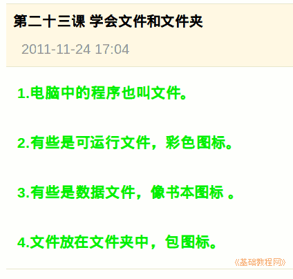

2011-2012 第一学期七年级电脑操作基础教学课程设计
作者：TeliuTe 来源：基础教程网
二十三、学会文件和文件夹 返回目录 下一课学习目标：学会文件和文件夹的概念；
注意事项：都是双击打开的；
1、文件和文件夹
1）电脑中的程序称作文件；
2）有些是可执行文件，彩色图标；
3）有些是数据文件，像书本一样；
4）文件放在文件夹中，文件夹是一个包的图标；

课后记 2011-11-24 17:42：
进去前先讲一下安静，楼道里不许吵本节学习了文件和文件夹的基础知识，如果你成功地完成了练习，请继续学习下一课内容；
本教程由86团学校TeliuTe制作|著作权所有
基础教程网：http://teliute.org/
美丽的校园……
转载和引用本站内容，请保留版权信息和本站链接。